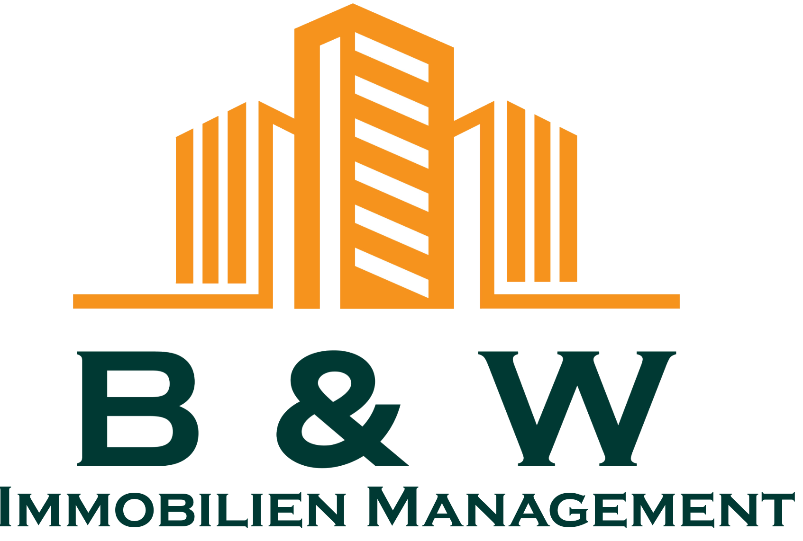

<!doctype html>
<!--
  Texttafeln als HTML statt als ffmpeg-drawtext oder Remotion.
  Grund: volle CSS-Kontrolle, die echten Markenschriften, keine zusätzliche
  Abhängigkeit und keine Lizenzfrage. Aufgenommen wird sie mit derselben
  Kette wie die App.
  Aufruf: card.html?t=Zeile%201|Zeile%202&kind=hook
-->
<meta charset="utf-8" />
<title>Karte</title>
<style>
  @font-face { font-family:"Inter"; font-weight:400; src:url("fonts/inter-400.woff2") format("woff2"); }
  @font-face { font-family:"Inter"; font-weight:600; src:url("fonts/inter-600.woff2") format("woff2"); }
  @font-face { font-family:"Plus Jakarta Sans"; font-weight:800; src:url("fonts/jakarta-800.woff2") format("woff2"); }

  :root {
    --green: #003630; --green-dark: #00241f; --orange: #f69018; --shell: #1a1512;
  }
  * { margin:0; padding:0; box-sizing:border-box; }
  html, body { width:1280px; height:720px; overflow:hidden; }
  body {
    background: radial-gradient(120% 100% at 50% 0%, #24413c 0%, var(--shell) 62%);
    color:#fff; font-family:"Inter",sans-serif;
    display:flex; align-items:center; justify-content:center; text-align:center;
  }
  .wrap { max-width: 900px; padding: 0 60px; }
  h1 {
    font-family:"Plus Jakarta Sans",sans-serif; font-weight:800; font-size:64px;
    line-height:1.1; letter-spacing:-0.02em; text-wrap:balance;
  }
  h1 .l { display:block; opacity:0; transform:translateY(16px); }
  /* Enter: ease-out über 400 ms. Kein Bounce, kein Überschwingen — das wirkt
     verspielt, und die Zielgruppe sucht Seriosität. */
  h1 .l.on { animation: rise .4s cubic-bezier(.22,.61,.36,1) forwards; }
  @keyframes rise { to { opacity:1; transform:translateY(0); } }
  .accent { color: var(--orange); }

  /* Endtafel */
  body.cta .wrap { display:flex; flex-direction:column; align-items:center; gap:34px; }
  /* Das Logo trägt dunkelgrüne Schrift und verschwindet auf dunklem Grund.
     Deshalb steht es auf einer hellen Platte — wie auf Briefpapier. */
  body.cta .plate { background:#fff; border-radius:18px; padding:22px 30px; opacity:0;
    box-shadow:0 12px 40px rgba(0,0,0,.35); animation: rise .5s cubic-bezier(.22,.61,.36,1) .1s forwards; }
  body.cta img { width:210px; height:auto; display:block; }
  body.cta h1 { font-size:52px; }
  .btn {
    display:inline-block; background:var(--orange); color:var(--green-dark);
    font-weight:600; font-size:24px; padding:16px 34px; border-radius:14px;
    opacity:0; animation: rise .45s cubic-bezier(.22,.61,.36,1) .75s forwards;
  }
  .sub { margin-top:6px; font-size:19px; color:#b9b0a8; opacity:0;
         animation: rise .45s cubic-bezier(.22,.61,.36,1) 1s forwards; }
</style>
<div class="wrap">
  <h1 id="h"></h1>
  <div id="extra"></div>
</div>
<script>
  const q = new URLSearchParams(location.search);
  const kind = q.get("kind") || "hook";
  const lines = (q.get("t") || "").split("|");

  if (kind === "cta") {
    document.body.classList.add("cta");
    const w = document.querySelector(".wrap");
    const plate = document.createElement("div");
    plate.className = "plate";
    plate.innerHTML = '';
    w.prepend(plate);
    document.getElementById("extra").innerHTML =
      '<div class="btn">Kostenlos einrichten</div><div class="sub">Ohne Verwaltervertrag. In wenigen Minuten.</div>';
  }

  const h = document.getElementById("h");
  lines.forEach((text) => {
    const s = document.createElement("span");
    s.className = "l";
    // *Wort* hebt ein Wort in Markenfarbe hervor.
    s.innerHTML = text.replace(/\*(.+?)\*/g, '<span class="accent">$1</span>');
    h.appendChild(s);
  });

  // Zeilen leicht versetzt einblenden — 90 ms, nicht mehr: Der Blick soll den
  // Satz als Ganzes lesen, nicht Zeile für Zeile hinterherlaufen.
  window.__play = () => {
    document.querySelectorAll(".l").forEach((el, i) => {
      setTimeout(() => el.classList.add("on"), i * 90);
    });
  };
</script>
